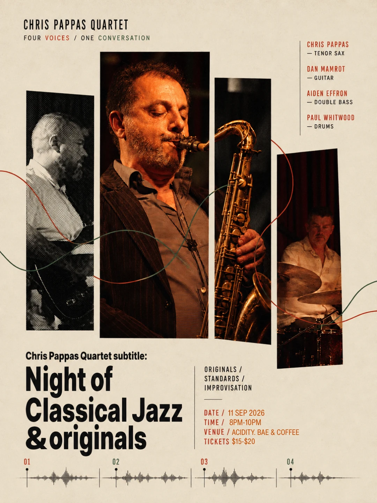

Live at Acidity
Chris Pappas Quartet
A night of classical jazz, originals, standards and open improvisation shaped through conversation between four musicians.
- Date
- Friday, 11 September 2026
- Time
- Doors 7:30PM · Music 8PM
- Line-up
- Chris Pappas — Tenor Sax
Dan Mamrot — Guitar
Aiden Effron — Double Bass
Paul Whitwood — Drums - Tickets
- $15–$20